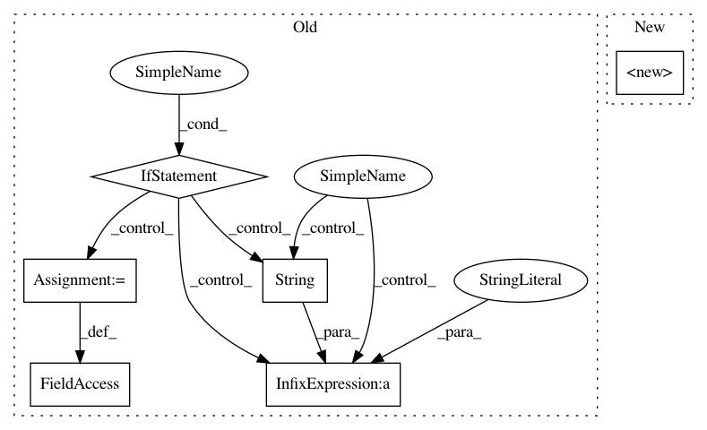

fb858d97347da7fe73103668e2276c584f93677b,pyemma/msm/estimators/maximum_likelihood_msm.py,MaximumLikelihoodMSM,__init__,#MaximumLikelihoodMSM#Any#Any#Any#Any#Any#Any#Any#Any#Any#,39
Before Change
// store counting mode (lowercase)
self.count_mode = str(count_mode).lower()
if self.count_mode not in ("sliding", "effective", "sample"):
raise ValueError("count mode " + count_mode + " is unknown.")
// store connectivity mode (lowercase)
self.connectivity = connectivity.lower()
if self.connectivity == "largest":
pass // this is the current default. no need to do anything
elif self.connectivity == "all":
raise NotImplementedError("MSM estimation with connectivity=\"all\" is currently not implemented.")
elif self.connectivity == "none":
raise NotImplementedError("MSM estimation with connectivity=\"none\" is currently not implemented.")
else:
raise ValueError("connectivity mode " + str(connectivity) + " is unknown.")
// time step
self.dt_traj = dt_traj
self.timestep_traj = _TimeUnit(dt_traj)
// convergence parameters
self.maxiter = maxiter
self.maxerr = maxerr
After Change
of the change vector, :math:`|e_i|_2`, is compared to maxerr.
super(MaximumLikelihoodMSM, self).__init__(lag=lag, reversible=reversible, count_mode=count_mode,
sparse=sparse, connectivity=connectivity, dt_traj=dt_traj)
self.statdist_constraint = _types.ensure_ndarray_or_None(statdist_constraint, ndim=None, kind="numeric")
if self.statdist_constraint is not None: // renormalize
self.statdist_constraint /= self.statdist_constraint.sum()
In pattern: SUPERPATTERN
Frequency: 3
Non-data size: 6
Instances
Project Name: markovmodel/PyEMMA
Commit Name: fb858d97347da7fe73103668e2276c584f93677b
Time: 2016-12-14
Author: feliks.nueske@fu-berlin.de
File Name: pyemma/msm/estimators/maximum_likelihood_msm.py
Class Name: MaximumLikelihoodMSM
Method Name: __init__
Project Name: pymanopt/pymanopt
Commit Name: 8871dc2edc70509ad61943293a05e4018006f8de
Time: 2020-01-25
Author: niklas.koep@gmail.com
File Name: pymanopt/manifolds/sphere.py
Class Name: Sphere
Method Name: __init__
Project Name: bashtage/linearmodels
Commit Name: 3dcd0e531d051152d4422688d9a715a1901f9a86
Time: 2017-04-21
Author: kevin.k.sheppard@gmail.com
File Name: linearmodels/iv/results.py
Class Name: IVModelComparison
Method Name: __init__